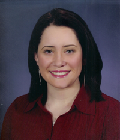

Undergraduate Highlights
- I graduated in May 2008 with a Bachelor's Dual Degree in Computer Science and Psychology.
-
I've been a member of the National Association for Computing Machinery
since 2004 and an
active member in Northeastern University's Student Chapter of the Association for Computing Machinery (nuACM) since 2003. I was President in 2007-2008, Vice
President in 2006-2007 and Treasurer in 2004-2006.
I also taught a 3 week course in March of 2007
on CSS, Javascript and XHTML basics
for nuACM's Co-op Preparation University. nuACM does a lot, check out our calendar!
-
I was also involved with the CCIS Volunteer
Systems Group (Crew)
and in the creation of
college podcast called NurdRadio. There are
also various other projects
going on. I was
also a student representative to the LISA '05
convention in San Diego in December of
2005.
-
I have been
present at many welcome days and have been
featured in some promotional material. I was
also in a video called “A Story in Eight
Voices” which is available on the CCIS website.
-
I'm also a member of the females in
computing group called CISters. We
do some fun stuff.
-
I was a student teacher for Teachgroup,
now known as the Bootstrap
program at CCIS, during the
summer in 2005. We developed the curriculum and
then taught a class of Boston area
middle-schoolers how to program a game in Scheme.
-
My favorite language is Ruby
and I like working with Ruby on Rails. I worked for Merck Research Laboratories
in the Longwood Medical area for my third co-op in 2007. I designed and implemented a database to house cell line information and then wrote a web interface using Ruby on Rails
so that scientists could search the database and find pertinent information on that cell line.